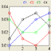

|  | TOAST Demo 7: Multi-spectral reconstruction |
This is a demonstration of a reconstruction of concentration Ci of up to 4 absorbing agents from multiple wavelength data.
Each agent ('chromophore') has a distinct wavelength-dependent extinction coefficient εi(λ), shown in the graph on the right. You can click on individual data points to edit them. The resulting absorption coefficient at each wavelength is given by the sum over chromophore concentration times extinction coefficient:
μ(λ) = Σi εi(λ) Ci
Select the number of chromophores (1-4) and the number of wavelengths (1-4). The number of wavelengths should at least equal the number of chromophores, to avoid crosstalk. A set of random target concentrations is shown in the top row of images. The resulting absorption images at each wavelength are shown in the next row.
You can create a new set of random concentration targets by clicking the 'New distribution' button.
Click 'Run' to start. This will first generate the forward data from the target chromophore distributions at all wavelengths, and then use a Gauss-Newton solver to reconstruct the concentrations from homogeneous initial distributions, given the known extinction spectra.
This demo uses CW data and assumes known and wavelength-independent scattering. Code for more general problems that use frequency domain data for additionally reconstructing scattering images is available.